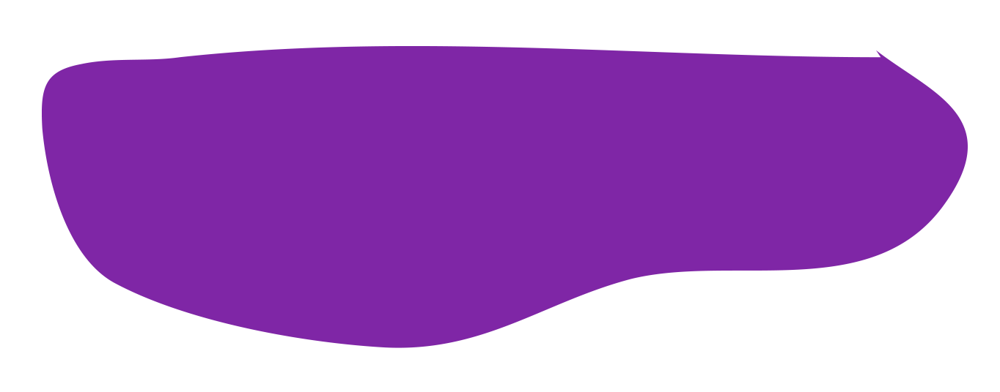
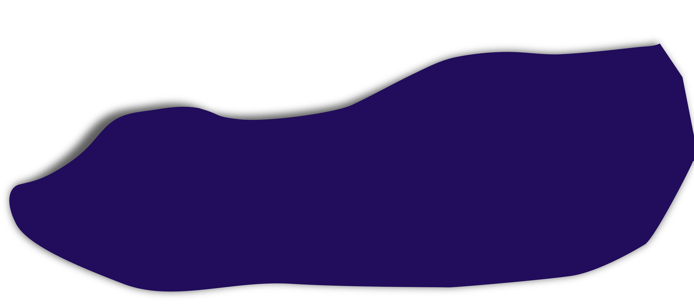
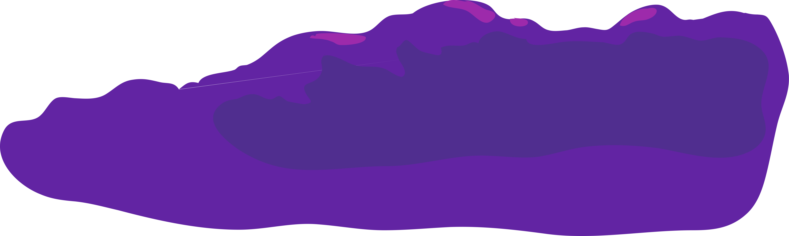
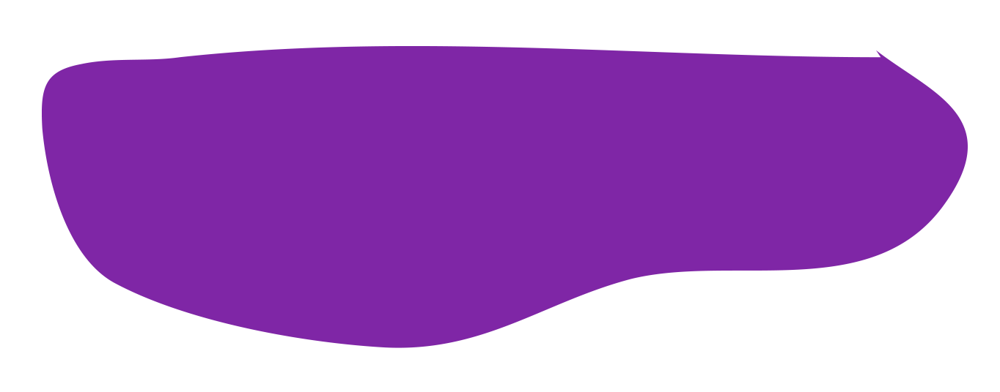
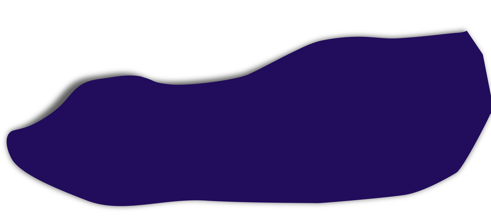
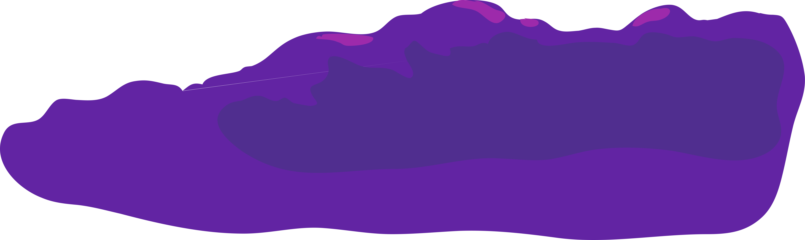

> echo "Welcome $(whoami)"
Hopefully you find what you're looking for.
Hopefully you find what you're looking for.
$ cat about
Hey, I'm Amy.
I've always wanted a nickname but unfortunately it doesn't get any shorter.
In terms of CS, I'm interested in a variety of things; I'm still traversing that well-paved road of higher education.
But I have a lot of experience in CS education and software practices, and I'm particularly interested in information security.
I've got grips on Java and Javascript mainly, a forgotten semester each of C and C++. And an obscure subset of Lisp called Racket.
Also LaTeX, bash, git, R, MatLab (dubious).
$ jobs
| Software Engineering Intern | Fusemail | September 2017 - present | |
|
|||
| Undergraduate Research Assistant | UBC Extended Learning | May 2017 - August 2017 | |
|
|||
| Undergraduate Teaching Assistant | UBC Computer Science | September 2016 - May 2017 | |
|
|||
$ ps u | grep hobbies
The part that I care about the most.|
Reading
I've loved:
|
Baking
vertical black sesame cake with matcha whipped cream
orangeflower madeleines juniper and lavender meringues idea: black sesame sable cookies with bitter matcha white chocolate chunks For more ideas check this pinterest cake board I have |
|
Drawing
Panel Content
|
Typing
Right now I'm using a Filco Majestouch 2, tenkeyless, with Cherry MX blues and aftermarket
pastel PBT keycaps.
(If anyone is selling a 60, 65, or 70% keyboard with clears, hit me up!) |
 




